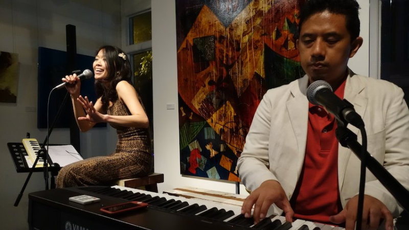

Juliet Pang & Didi Mudigdo
UPDATE: This February 2017, I will be holding two jazz singing workshops at the Victoria Park Centre for the Arts: Jazz Vocal Ensemble (7th February) and Solo Jazz Singing (8th February). Please go to this blog entry for more information.
Thanks for visiting my site! Come and read about my story, get some information on jazz singing lessons, listen to audio samples of my jazz piano accompaniment or catch up on my latest blog entries. You can also visit my social media profiles on YouTube and Twitter.